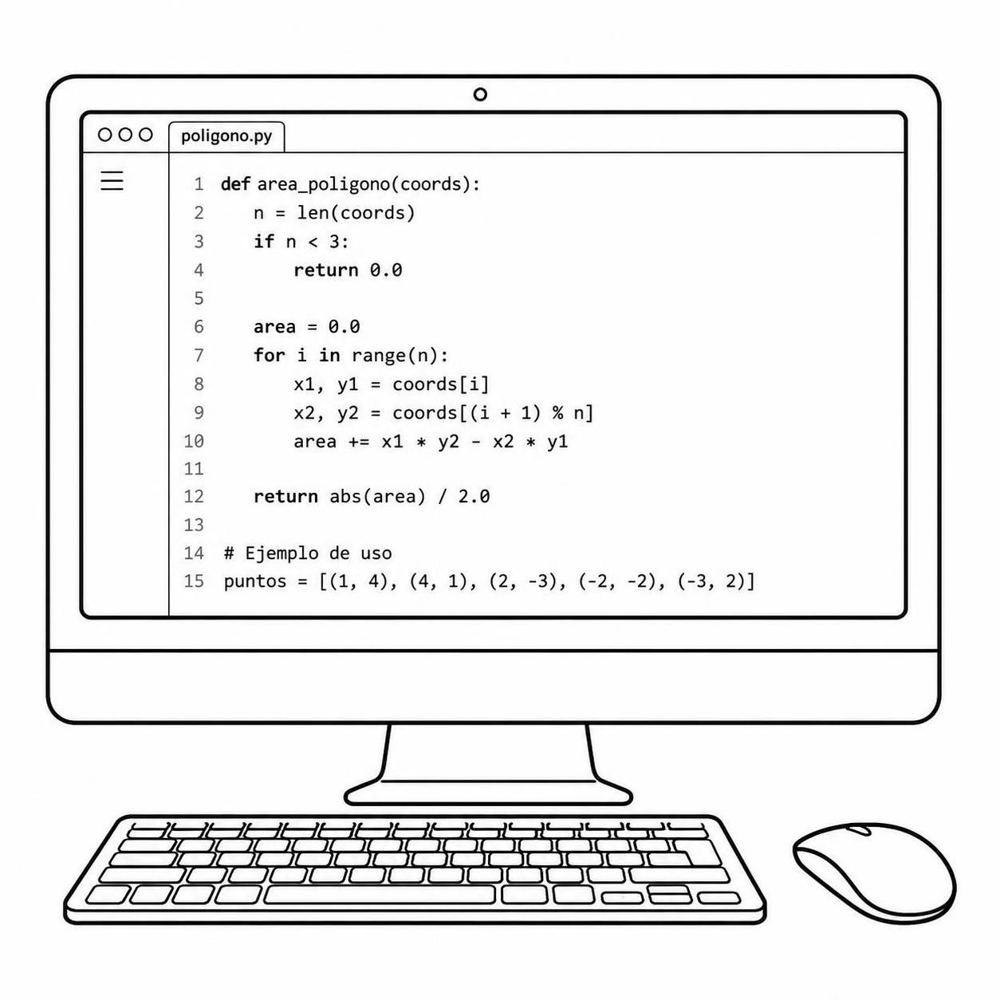
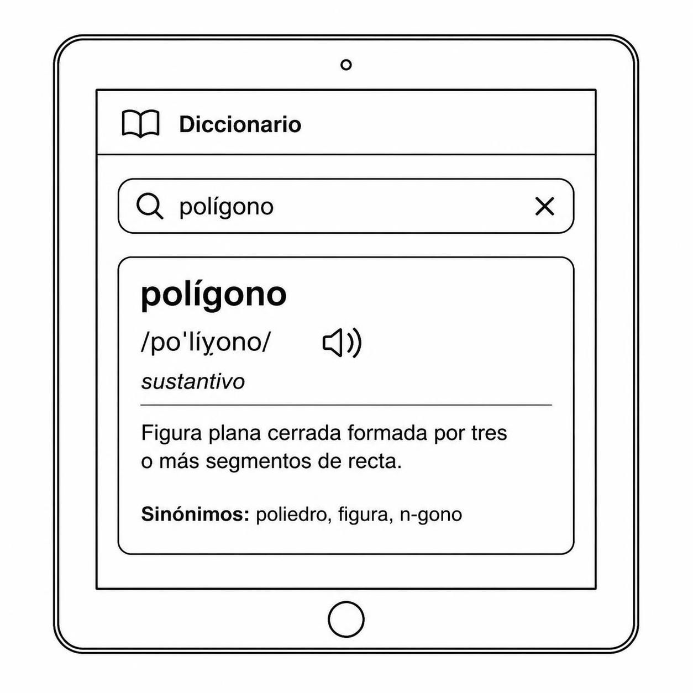
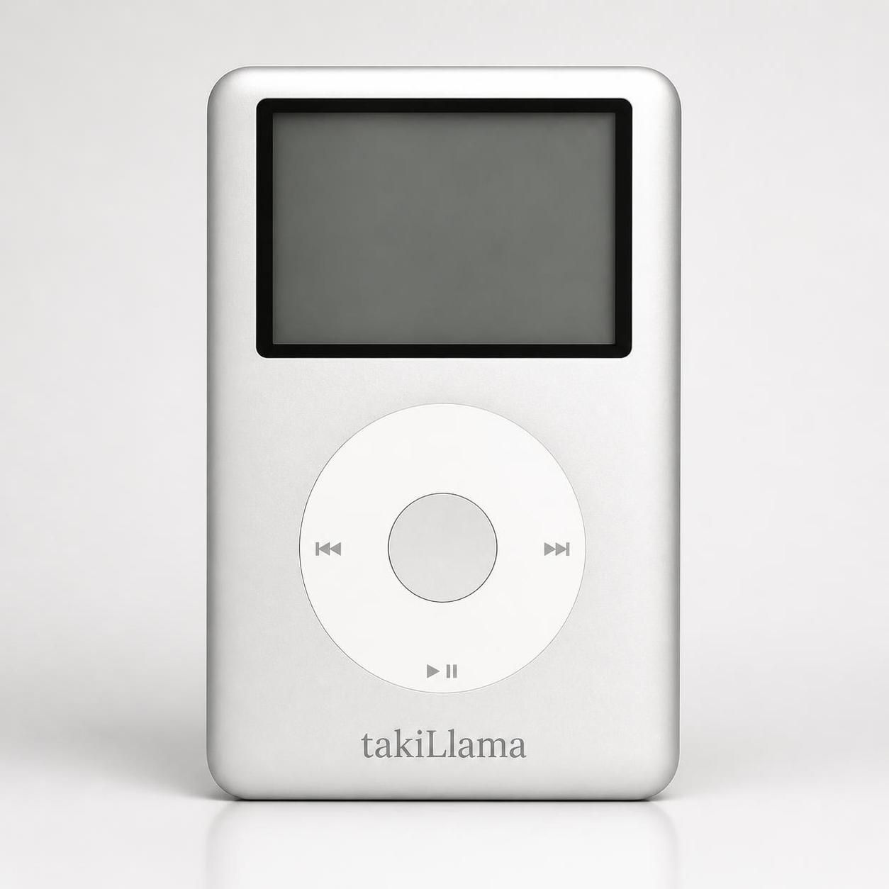

Diferentes programas que permiten realizar distintas tareas, un aporte para el software libre.

Visor código
Un visor de código que permite trabajar con varios lenguajes de programación, escrito en Python; además de su tamaño extremadamente péqueño, resulta de gran utilidad debido a su versatilidad
Un visor de código que permite trabajar con varios lenguajes de programación, escrito en Python; además de su tamaño extremadamente péqueño, resulta de gran utilidad debido a su versatilidad

Diccionario
Diccionario en versión electrónica, permite buscar palabras previo la carga de datos mediante un formato establecido, aún en construcción en especial por los datos del idioma...
Diccionario en versión electrónica, permite buscar palabras previo la carga de datos mediante un formato establecido, aún en construcción en especial por los datos del idioma...

takiLlama
Reproductor musical, escrito en html, sirve en cualquier navegador e incluso en móviles.